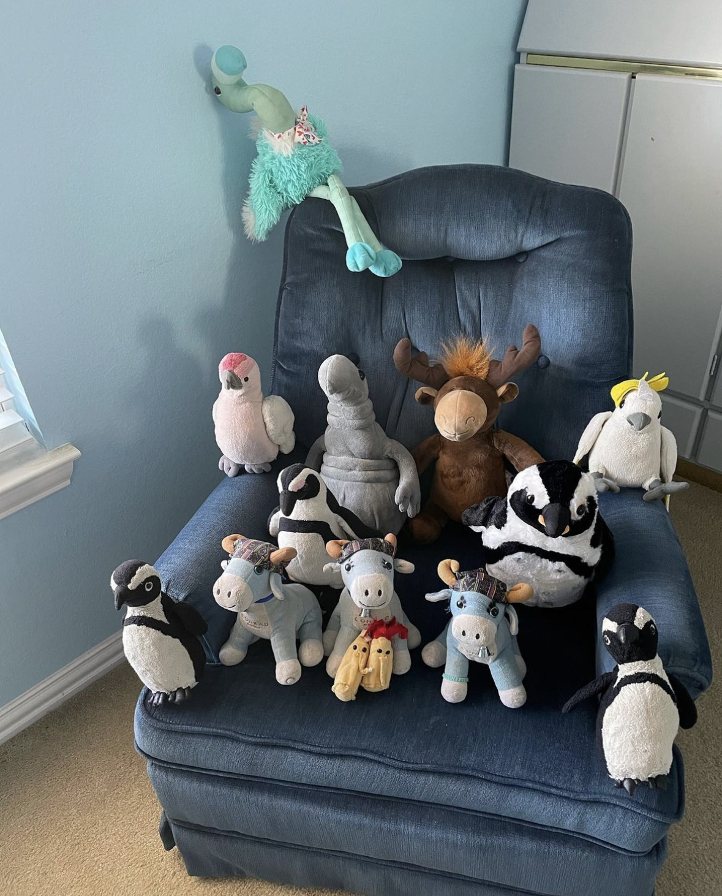
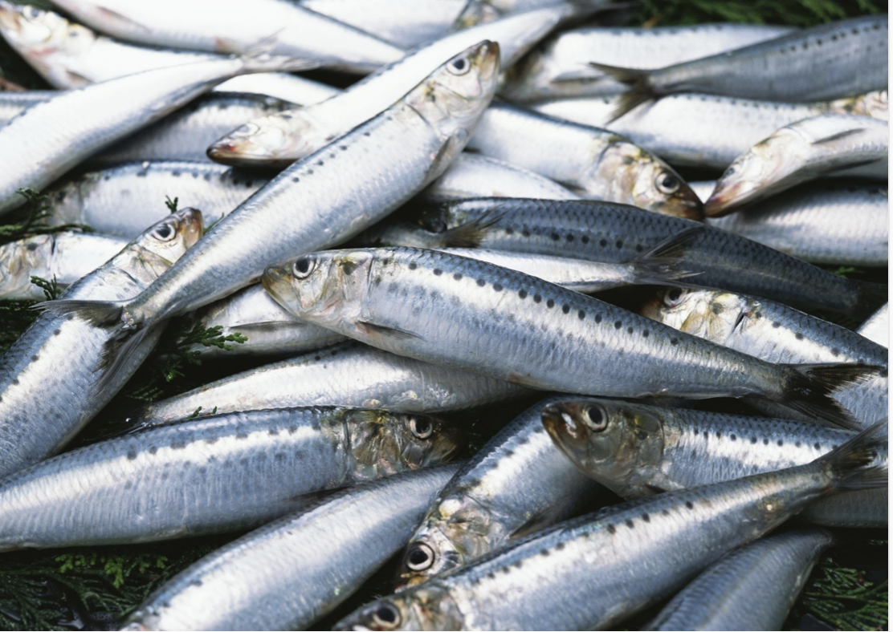

I am Pingg and I am from South Africa, and I am fluent in Penguinese, Bengali, Hindi, and English. My friends are cows, a moose, a couple of cockatoos, a flamingo, three aliens, and of course, other penguins! I am married to Pingella, and she is obnoxious! Truth be told, I only only married her because she has chronic gas.
This is my family!
I love fish, like really LOVE fish! I am a penguin after all, you know! Fried, grilled, raw, ceviche, I really don't care. And it's not just fish, I am a sucker for shrimp, squid, crab cakes, all other seafood! I'm an expert at cleaning the meat out of a lobster tail, if I do say so myself.
I also enjoy roaming around the world and I often fly with my human and his mother. Obviously, my favorite places will be on the seashore, since I have eaten fish in less than 3 inches of water - I am 6 inches tall. But I am also extremely lazy, and I am not the best swimmer, but neither is Pingella, so we order our food online and another penguin delivers it to our door. Pingella is also a very messy eater, and insists on having her fish accompanied by a hefty accompaniment of hard-boiled eggs.
On a more serious note, my species is endangered and at risk of extinction. Oil drilling and spills, overfishing and leaving us with insufficient food, and humans just being mean and hurting us. It would mean so much to me if you could help!